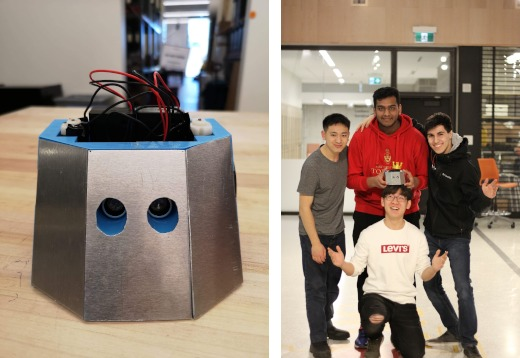
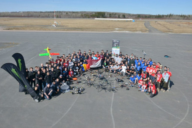

The only thing better than trying something new is the opportunity to learn from the experience and better yourself.
It is my mission to continuously seek out new learning opportunities, strengthen my skills, and work towards the goal of becoming a full stack developer
To further my knowlege in programming I have launched myself into learning web development starting from the ground up. I am self-taught in HTML/CSS and JavaScript, developing skills that were used to make this website.
In the beginnings of learning JavaScript I recreated a popular retro-game:
Machine Learning by Stanford University on Coursera Final Grade: 98.8%
Machine Learning course on Coursera taught by Prof. Andrew Ng of Stanford University. Practical and introductory course to machine learning that can be used in the workplace.
University of Toronto Robotics AssociationFall 2018 - Present
University of Toronto Robotics Association Position: PM Fabrication
The University of Toronto Robotics Association (UTRA) is an incredible community that I have the pleasure of being a part of. I have experience in the 3D Printing, SUMO, and Fabrication sub-teams.
The 3D Printing sub-team consisted of 3D modelling and printing tutorials before it was refactored into the Fabrication sub-team. We used Autodesk Fusion360 computer-aided design (CAD) software and FlashForge printers.
Succulent pot that I designed during a CAD tutorial in Fusion360
UTRA SUMO
As part of the SUMO sub-team, I formed a team of 4 and worked to create a robot to fight in the anual SUMO competition. In a SUMO match, AI robots fight to push each other out of a ring. Winners in these fights are ultimately decided based on good design, thoughtful programming, and careful construction. I was responsible for the chasis and AI design components while my team members did the electrical and some programming. We won 2nd place of 15 teams in the competition.

The robot we entered in the SUMO competition (left). My team from left to right: Gavin Gu, Yash Vardhan, Andrew Kim, and myself (right)
UTRA Fabrication
To further my involvement in UTRA, I applied for the Project Manager position in the Fabrication sub-team. I am happy to say that I got the position and I have been working hard since. As a Project Manager of Fabrication I have the resposibility to: maintain the 3D Printers, give printing tutorials to other executives and casual memebers and manage the print queue. I am loving this community and I strive to be just as involved in the future.
Notable experience:
>_ Arduino Programming
>_ CAD in 3D modelling
>_ Leadership and mentorship
>_ Arduino circuitry and sensors
University of Toronto Aerospace TeamFall 2018 - Summer 2019

Unmanned Systems Canada 2019 teams
University of Toronto Aerospace Team Division: Unmanned Aerial Systems (UAS)
I joined the University of Toronto Aerospace Team (UTAT) in October 2018 and entered the Unmanned Aerial Systems (UAS) division software sub-team. There, I worked with Teledyne Dalsa cameras and an Odroid X4U computer to set up remote imaging from our quad-copter in C++. UAS is a great community full of brilliant young individuals. I am happy to say that we won 5th place in Phase I of the Unmanned Systems Canada (USC) 2019 national competition.
Post secondary education offering countless opportunities that I did not have access to before. I am endlessly thankful for the chance to learn many complex concepts in a high level environment. Through devotion to my studies I achieved a cumulative GPA of 3.94 and the Edward S. Rogers Sr. Department of Electrical & Computer Engineering Top Student Award.
Notable experience:
>_ C/C++ programming languages
>_ Digital and Analog circuitry
>_ Assembly programming language
>_ Verilog hardware description language
>_ Using Git in large programming projects
>_ Managing a team to meet milestones and dealines
>_ Team leader in Engineering Design teams to solve client requests
ICS4U - Computer ScienceWinter 2018
ICS4U - Computer Science Final Grade: 97%
Grade 12 high school course acting as a follow-up to the Grade 11 python course. Covers further programming topics and languages. Challenges students to learn the differences of languages and complete assignments in both Java and Swift. Taught by Patrick Coxall at St. Mother Teresa High School, Nepean, Ontario.
Notable experience:
>_ Java programming language
>_ Swift programming language
>_ Recursion in programming
You.i TV - CO-OP PlacementWinter 2017 - Summer 2017
You.i TV - CO-OP education & part-time Job
This placement began as a co-op in the winter semester of Grade 11 and turned into a summer job as an IT assistant. I used an OSX laptop to perform tasks such as: creating computer images to streamline development environment setup for incoming employees, configuring a raspberry pi to detect wi-fi latency, and writing custom scripts to organize data in output files.
Notable experience:
>_ Computer imaging
>_ Unix operating systems
>_ Development environment setup
>_ Debugging/Finding Workarounds
ICS3U - Introduction to Computer ScienceFall 2016
ICS3U - Introduction to Computer Science Final Grade: 96%
Grade 11 High School course that covers the basics of programming with python. Taught by Patrick Coxall at St. Mother Teresa High School, Nepean, Ontario. This was my first exposure to text-based programming. The final project of this course involved creating an app and getting it approved on the Apple App Store.
Notable experience:
>_ Object oriented programming
>_ App development for the Apple App Store
Personal ProjectsPresent
I enjoy challenging myself and so I frequently launch myself into personal projects. Some of my favourite ones have been my minesweeper solver and sudoku solver. Please feel free to check them out on my projects page.
I never seem to run out of ideas for what to do in the future but on the other hand it is very easy for me to run out of time in the day to work on them. I am working towards being a full-stack developer and these plans are just steps along the way to achieving that. Here are a few of my planned ideas for what I want to work on in the future:
>_ SQL databases
SQL is an important part of data management and I want to be well-versed in the language
>_ AWS Cloud Computing
Amazon has countless technologies emerging at a rapid pace and it would be rewarding to have deep knowlege of this valuable ressource
>_ Web Crawling
Widely used but most of the public is unaware of their existence. It would be rewarding to have experience of my own with them
>_ Checkers - Machine Learning AI
My machine learning course is complete and I want to apply it to something fun and educational
>_ Remote 3D Print streaming
Complex networking on campus means all happenings on campus are difficult to view remotely. It is a challenging and rewarding project to set up remote streaming of the University of Toronto Robotics Associations 3D printers and enable remote check-ups and filming
>_ Continued Robotics
I am getting my old robotics team back together to make something new. We hope to make it successful enough to be supported by the University of Toronto Robotics Association
Achievements
3rd highest High School average: 97%
Edward S. Rogers Sr. Department of Electrical & Computer Engineering ECE Outstanding Student Award 2018-2019
Edward S. Rogers Sr. Department of Electrical & Computer Engineering Top Student Award
2nd place of 15 teams in SUMO robot design and battle competition
5th place of 12 teams in Phase I of the Unmanned Systems Canada (USC) 2019 national competition